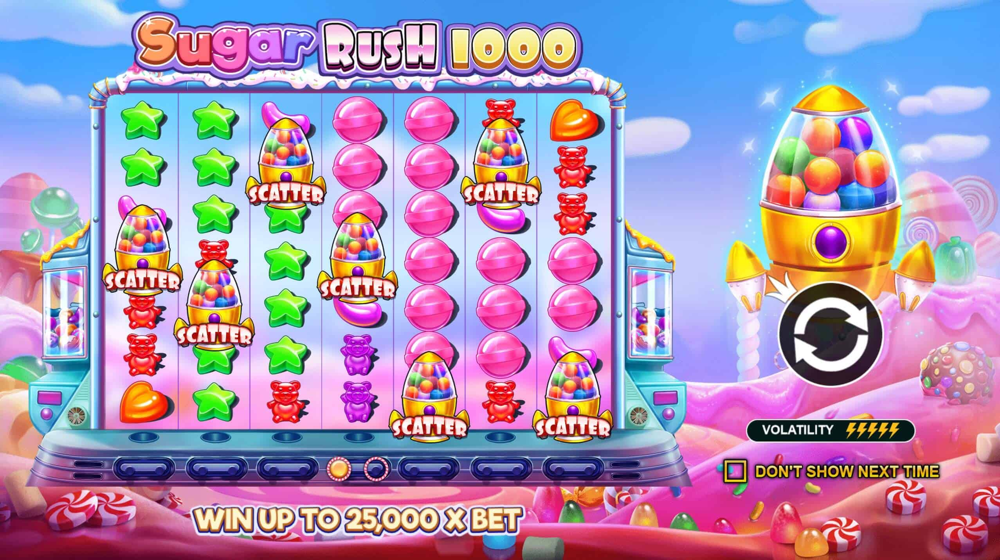

Кластерные выплаты 7×7
Выигрыш даёт группа из 5+ соприкасающихся конфет — без линий, зато с частыми цепочками.
Pragmatic Play · Конфетный слот
Sugar Rush 1000 (Шугар Раш 1000) — сладкое продолжение культового Sugar Rush с полем 7×7 и кластерными выплатами. RTP 96.53%, высокая волатильность, максимум ×25 000, споты-множители до ×1024 и покупка бонуса. Ниже — обзор, демо и где играть на деньги.
Sugar Rush 1000 — конфетный игровой автомат от Pragmatic Play, усиленное продолжение хита Sugar Rush. Играется на поле 7×7 по механике кластерных выплат: выигрыш засчитывается, когда пять и более одинаковых конфет соприкасаются по горизонтали или вертикали. Выигрышные символы лопаются, а на их место падают новые (каскад), продлевая цепочку выплат.
Главная фишка — споты-множители: место каждого лопнувшего символа запоминается, и при повторных попаданиях множитель растёт до ×1024. За счёт этого и высокой волатильности слот выдаёт редкие, но огромные заносы — недаром «шугар раш 1000» ищут вместе со словами «занос» и «покупка бонуса». Играть можно в демо на монеты или на деньги в рублях.

Выигрыши в Sugar Rush 1000 собираются кластерами — группами из пяти и более одинаковых конфет, соприкасающихся сторонами. Чем крупнее кластер и дороже символ — тем больше выплата. Отдельно работают споты-множители и scatter.
Точные коэффициенты выплат зависят от размера ставки и показаны в таблице выплат прямо в игре.
Запустить конфетный слот на реальные деньги в рублях можно за три шага — от регистрации до первого каскада.
Создайте аккаунт в казино со слотами Pragmatic Play — займёт пару минут.
Внесите депозит удобным способом и активируйте приветственный бонус.
Найдите Sugar Rush 1000 в каталоге и играйте на реальные деньги.
Выигрыш даёт группа из 5+ соприкасающихся конфет — без линий, зато с частыми цепочками.
Позиции лопнувших символов копят множитель до ×1024 — источник заносов ×25 000.
Бонусные фриспины стартуют с уже готовыми множителями, которые не сбрасываются до конца раунда.
За фиксированную ставку можно сразу купить Super Free Spins и не ждать scatter. Только в игре на деньги.
Запустите Sugar Rush 1000 demo — демо-версию на виртуальные монеты — без депозита и регистрации. В демо доступны кластеры, каскады, споты-множители и покупка бонуса, чтобы оценить механику и волатильность перед игрой в рублях. Выигрыши в демо не выводятся.
Играть демо бесплатноБазовый RTP — 96.53%, волатильность высокая. У Pragmatic Play есть настраиваемые версии отдачи, поэтому в разных казино показатель может отличаться — смотрите описание игры.
Sugar Rush 1000 demo (демо-версия) запускается на виртуальные монеты без депозита и регистрации — кнопка «Играть демо». Механика та же, что на деньги, но выигрыши не выводятся.
Зарегистрируйтесь в казино со слотами Pragmatic Play, пополните счёт и запустите игру в реальном режиме. Ставки и вывод — в рублях. Ссылки на игру — в кнопках «Играть на деньги».
Место каждого лопнувшего символа становится спотом-множителем. При повторном попадании на ту же клетку множитель растёт: ×2, ×4, ×8 … до ×1024. В Super Free Spins споты не сбрасываются между вращениями.
Максимум — ×25 000 от ставки. Крупные заносы приходят в Super Free Spins за счёт накопленных спотов-множителей.
Самые высокооплачиваемые — премиальные сердечки и звёзды, дешевле мармеладные мишки, цветные драже и леденцы. Отдельно работает scatter, запускающий фриспины.
Да, слот адаптирован под Android и iOS и запускается прямо в браузере телефона без установки — и в демо, и на реальные деньги.
Покупка бонуса сразу запускает Super Free Spins, но стоит в разы дороже ставки и не гарантирует выигрыш. При высокой волатильности слота это осмысленно только с запасом банка.
Фриспины начисляются после регистрации — активация за минуту, отыгрыш и вывод в рублях. Количество бонусов ограничено.
Забрать фриспины